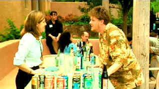

| Tao of Steve, The (SE) B+,B+ |
| Columbia/2000/87/ANA 1.85 |
A special joy that comes from watching small films. With big, high profile projects, much of the freshness and surprise is done away with by hype and expectation. Not so with small film discoveries. The Tao of Steve is a good example: a good, solid effort that works as well as it does because of soft expectations and comfortable discovery. Everything is easy-going. There's a different kind of energy charging The Tao of Steve. Much like the actor inspiration of its title, Steve McQueen, this small film is often the essence of cool.
 |
| Plying the Tao of Steve. ©Columbia |
The Tao of Steve
refers to Steve McQueen and his cool quotient and Dex is the high priest of a
small faithful cult. The philosophy distills the essence of cool into a schematic aloof
posturing when confronted by beautiful women. For Dex, it’s a way of picking up
girls and bedding them down and he’s been doing it, with an assist from Steve, for ten years
since graduating college. Times change. Dex has changed, but his philosophy has remained the
guiding force of his life, until he meets Syd at a ten-year college reunion. The sexual sparks fly.
Memories are rekindled. Syd's the kind of girl that turns things around. A
very entertaining film, even coming from the perspective of a Stu; My God, am I a Stu.
You’ll have to watch the flick to understand what that means.
The charming small romantic comedy set in a New Mexico
community is directed by Jenniphr Goodman and co-written by her with Duncan North and Greer
Goodman. It's a nice script directed with good energy and efficiency. The film never drags, yes,
even maintaining the spirit of cool from start to finish.
Donal Logue conjures fantastic screen charm as Dex. Rubbing his protruding belly
like a Buddha that knows more than you think, Dex beds women with relish and cold slaw and a
pickle. Greer Goodman is fine as Syd and Dave "Kimo" Wills is often too goofy as
Dave.
The Tao of Steve is delivered in a colorful,
warm transfer that blends with the thematic material. The Southwest locations cast a pink glow on
the world of these characters. Images are mostly sharp and well-defined. There's excellent depth to
the cinematography and transfer. The very saturated colors are partnered with creamy blacks and
comfortable contrast levels. The Dolby Digital 5:1 surround mix creates the proper ambiance and the
score by Joe Della and music supervisor Tracy McKnight is treated with audible respect.
The special edition includes a cast and crew audio commentary with the
creators and stars of the film. They share the inspiration for the script and enjoyable anecdotes
about making the film. The variety of speaking styles and individual insights make for a sparkling
natural commentary that echoes the ease of the film itself.

Truman Show/A,A-
Powered by the consummate taste and directing perfection of Peter Weir. Jim Carrey gives a
marvelous performance. Not to be missed!

If the FBI Warning won't get you than the logo wars
will.

Selections from the feature archive include articles on Akira Kurosawa,
Frank Darabont, Blonde Bimbos, Hollywood
Street Gangs, or Vietnam:
The Hollywood Pariah, and many more....
Gotta
Dance
Fred and Ginger tapped their way into the hearts of movie fans everywhere. Stu Kobak takes a look at some of those
dance movies that gifted audiences toe-tapping pleasure. Click on the image to get in on the beat.

 Have you visited Home Theater
Talk lately? One of the friendliest places on the Net for Home Theater and DVD discussion, you
can get help for installation problems or simply share your opinions with other Vidiots.
Have you visited Home Theater
Talk lately? One of the friendliest places on the Net for Home Theater and DVD discussion, you
can get help for installation problems or simply share your opinions with other Vidiots.

DVD Dimensions sells DVDs from an easy
to use online interface.
 Jim
Doolittle
Jim
Doolittle
ISF Instructor. Premier calibrator and expert front projection system setup technician in the
Boston area.